<title>Adaptive QoS Engine</title>
<link rel="preconnect" href="https://fonts.googleapis.com">
<link rel="preconnect" href="https://fonts.gstatic.com" crossorigin>
<link rel="stylesheet" href="https://fonts.googleapis.com/css2?family=IBM+Plex+Sans+Condensed:wght@500;600;700&family=IBM+Plex+Sans:ital,wght@0,400;0,500;0,600;1,400&family=IBM+Plex+Mono:wght@400;500&display=swap">
<style>
/* Layout: one reading column of about 68 characters; figures and tables break out to a wider
   measure. A lab notebook more than a brochure: the numbers carry the page. */
:root {
  --paper: #f6f7f5;
  --sheet: #fcfcfb;          /* the charts' own surface */
  --ink: #15171a;
  --ink-2: #474b52;
  --ink-3: #6e737b;
  --rule: #d9dcd8;
  --accent: #5242c4;         /* the full system's colour in every chart */
  --accent-soft: #e9e6fb;
  --cake: #2a78d6;
  --warn: #9a5b00;
  --warn-soft: #fbf0dc;
  --display: "IBM Plex Sans Condensed", "Arial Narrow", "Helvetica Neue", Arial, sans-serif;
  --body: "IBM Plex Sans", "Helvetica Neue", Arial, sans-serif;
  --mono: "IBM Plex Mono", ui-monospace, "SFMono-Regular", Menlo, monospace;
  --measure: 44rem;
  --wide: 64rem;
}
@media (prefers-color-scheme: dark) {
  :root:not([data-theme="light"]) {
    --paper: #131518; --sheet: #fcfcfb; --ink: #e9ebee; --ink-2: #b9bec6; --ink-3: #8c929b;
    --rule: #2c3036; --accent: #9a8ff0; --accent-soft: #24213d; --cake: #5ea0ec;
    --warn: #f0b552; --warn-soft: #2e2516; color-scheme: dark;
  }
}
:root[data-theme="dark"] {
  --paper: #131518; --sheet: #fcfcfb; --ink: #e9ebee; --ink-2: #b9bec6; --ink-3: #8c929b;
  --rule: #2c3036; --accent: #9a8ff0; --accent-soft: #24213d; --cake: #5ea0ec;
  --warn: #f0b552; --warn-soft: #2e2516; color-scheme: dark;
}

body { background: var(--paper); color: var(--ink); font: 400 1.0625rem/1.65 var(--body); }
.page { padding-inline: 1.25rem; padding-block: 3rem 5rem; display: grid; gap: 3.25rem; }
.page > * { width: 100%; max-width: var(--measure); margin-inline: auto; }
.page > .wide { max-width: var(--wide); }

h1, h2, h3 { font-family: var(--display); line-height: 1.12; text-wrap: balance; margin: 0; }
h1 { font-size: clamp(2.4rem, 6vw, 3.6rem); font-weight: 700; letter-spacing: -0.01em; }
h2 { font-size: 1.75rem; font-weight: 600; }
h3 { font-size: 1.2rem; font-weight: 600; }
p { margin: 0; }
section, header { display: grid; gap: 1.1rem; }
.eyebrow { font: 500 0.78rem/1.3 var(--mono); letter-spacing: 0.08em; text-transform: uppercase; color: var(--ink-3); }
.lede { font-size: 1.22rem; line-height: 1.55; color: var(--ink-2); }
.meta { font: 400 0.85rem/1.5 var(--mono); color: var(--ink-3); }
strong { font-weight: 600; }
a { color: var(--accent); }
code, .num { font-family: var(--mono); font-size: 0.9em; }
.num { font-variant-numeric: tabular-nums; }

/* The headline figures: the point of the page, so they lead. */
.figures { display: grid; grid-template-columns: repeat(auto-fit, minmax(13rem, 1fr)); gap: 1px; background: var(--rule);
  border: 1px solid var(--rule); }
.figure-cell { background: var(--paper); padding: 1.1rem 1.2rem 1.2rem; display: grid; gap: 0.35rem; align-content: start; }
.figure-cell .big { font: 600 2.4rem/1 var(--display); font-variant-numeric: tabular-nums; }
.figure-cell .big.ours { color: var(--accent); }
.figure-cell .what { font-size: 0.92rem; line-height: 1.45; color: var(--ink-2); }

.status { border-left: 3px solid var(--warn); background: var(--warn-soft); padding: 0.9rem 1.1rem; font-size: 0.95rem; color: var(--ink); }

/* Charts were drawn on a light surface; they keep it in either theme. */
figure { margin: 0; display: grid; gap: 0.6rem; }
figure img { width: 100%; height: auto; display: block; background: var(--sheet); border: 1px solid var(--rule); border-radius: 3px; }
figcaption { font-size: 0.9rem; line-height: 1.5; color: var(--ink-2); }
.pair { display: grid; grid-template-columns: repeat(auto-fit, minmax(min(100%, 26rem), 1fr)); gap: 1.5rem; }
.pair figure { min-width: 0; }

.table-wrap { overflow-x: auto; border: 1px solid var(--rule); border-radius: 3px; }
table { border-collapse: collapse; width: 100%; font-size: 0.92rem; font-variant-numeric: tabular-nums; }
th, td { padding: 0.55rem 0.75rem; text-align: left; vertical-align: top; border-bottom: 1px solid var(--rule); }
thead th { font: 500 0.75rem/1.3 var(--mono); letter-spacing: 0.06em; text-transform: uppercase; color: var(--ink-3); background: var(--paper); }
tbody tr:last-child td { border-bottom: 0; }
td.n { text-align: right; font-family: var(--mono); white-space: nowrap; }
td.ours, th.ours { color: var(--accent); font-weight: 600; }
td.tag { white-space: nowrap; font-family: var(--mono); font-size: 0.82rem; }
.win { color: var(--accent); } .tie { color: var(--ink-3); } .loss { color: var(--warn); }

ol.steps, ul.plain { margin: 0; padding-left: 1.2rem; display: grid; gap: 0.5rem; }
ul.plain li::marker { color: var(--ink-3); }
.finding { display: grid; gap: 0.35rem; padding-top: 0.9rem; border-top: 1px solid var(--rule); }
.findings { display: grid; gap: 1.1rem; }
pre.cmd { margin: 0; overflow-x: auto; padding: 1rem 1.1rem; border: 1px solid var(--rule); border-radius: 3px;
  font: 400 0.85rem/1.6 var(--mono); background: var(--paper); color: var(--ink); }
pre.mermaid { margin: 0; background: transparent; text-align: center; }
.diagram { overflow-x: auto; border: 1px solid var(--rule); border-radius: 3px; padding: 1rem; }
hr { border: 0; border-top: 1px solid var(--rule); margin: 0; }
:focus-visible { outline: 2px solid var(--accent); outline-offset: 2px; }
</style>

<main class="page">

<header>
  <p class="eyebrow">Teliport Season 4 · case study · final results of the frozen system</p>
  <h1>Adaptive QoS Engine</h1>
  <p class="lede">A home router that recognises a video call, a game or a download from packet sizes and timing alone, and puts each in the right priority queue of Linux CAKE. It beats plain CAKE when a call or a game shares its device with bulk traffic, ties it when they are alone on their devices, and never did worse than the hand-written threshold rules that existing tools use.</p>
  <p class="meta">Measured Oct 13–16, 2026 · 1,032 runs (450 in development, 90 A/A, 492 after the freeze), all valid · reference laptop: Fedora 43, kernel 7.2.8, 16 cores</p>
</header>

<section class="wide" aria-label="Headline results">
  <div class="figures">
    <div class="figure-cell"><span class="big ours num">94% → 0.6%</span><span class="what">late frames of an HD video call on a laptop that is also sharing files (S6): plain CAKE against AQoSE, median of ten seeds.</span></div>
    <div class="figure-cell"><span class="big ours num">83% → 1.0%</span><span class="what">late frames of a cloud game on a PC fetching an update (S7). The threshold rules: 19%.</span></div>
    <div class="figure-cell"><span class="big ours num">57% → 2.4%</span><span class="what">late frames of a <strong>real WhatsApp video call</strong>, replayed packet for packet, on a laptop sharing files (S12). The model never trained on this call.</span></div>
    <div class="figure-cell"><span class="big ours num">0 / 140</span><span class="what">paired runs in which AQoSE did worse than plain CAKE: 70 better, 70 tied, on ten development seeds and five fresh ones. Never worse than threshold rules; better than cake-autorate in 20 of 20.</span></div>
  </div>
</section>

<p class="status"><strong>Final.</strong> Every number here comes from the frozen system (code, model and settings locked on Oct 15 at 07:41), unless a section says otherwise. After the freeze it was run on the ten development seeds, on five fresh seeds and a scenario never run before, against cake-autorate, and on two real WhatsApp calls replayed in the testbed; the sealed test set of real captures was opened once. The full PDF report, the code and every script are public: <a href="https://github.com/shreyashsri79/aqose">github.com/shreyashsri79/aqose</a>.</p>

<section>
  <p class="eyebrow">The problem</p>
  <h2>Fair queueing cannot tell which flow is the call</h2>
  <p>CAKE is the best queue manager a home router can run. It shapes traffic just under the line rate so queues stay short, shares the link fairly between devices, and then fairly between each device's connections. For most homes, most of the time, that is enough: a call on one laptop survives a download on another.</p>
  <p>It stops being enough when the call shares its device with bulk traffic. A laptop on a video call while a file-sharing client keeps ten connections open gives the call one eleventh of that laptop's share, far less than an HD call needs. Fair queueing has no way to know which of the eleven is the call. CAKE does have four priority queues, called tins (Voice, Video, Best Effort, Bulk), but something has to decide which flow goes in which.</p>
  <p>Existing tools decide with thresholds: a flow with a high packet rate is bulk, small packets are priority. That rule mistakes an HD video call (400 to 600 packets a second) and a cloud-gaming stream (over 1,000) for downloads, and demotes exactly the traffic it should protect. qosify's own documentation describes the cloud-gaming case.</p>
  <p>This project replaces the thresholds with a small trained classifier, and replaces "pick the most likely class" with "pick the tin that does the least expected damage".</p>
</section>

<section>
  <p class="eyebrow">How it works</p>
  <h2>From eight packets to a tin, in a few milliseconds</h2>
  <p>A controller on the router watches the headers of each new flow's first eight packets: sizes, directions and the gaps between them. No payload, no addresses leave the controller. A LightGBM model turns them into a probability for each of seven traffic classes in about 1.4 ms (95th percentile 4.3 ms). A decision engine then multiplies those probabilities by a measured damage table and picks the tin with the lowest expected damage. A safety shield checks every proposal against fixed bounds before the enforcer writes it as a connection mark, which CAKE reads for every packet.</p>
  <div class="diagram">
<pre class="mermaid">
flowchart LR
  P["First 8 packets<br/>sizes and gaps"] --> C["Classifier<br/>7 class probabilities"]
  C --> D["Decision engine<br/>lowest expected damage"]
  T[("Measured<br/>damage table")] --> D
  D --> S{"Safety shield"}
  S -->|accept| E["Conntrack mark"] --> K["CAKE tin"]
  S -->|reject| U["Left to plain CAKE"]
  R["Reclassifier<br/>class envelopes"] -.-> C
  V["QoE verifier<br/>rollback"] -.-> S
  Q["Capacity estimator<br/>delay probes"] -.-> S
  W["Watchdog"] -.->|"2 s silence"| U
</pre>
  </div>
  <ul class="plain">
    <li><strong>Expected damage, not top label.</strong> At 45% video call and 55% download, top label sends the flow to Bulk, which ruins it if it is the call. Expected damage weighs that risk and keeps it out of Bulk. Two hand rules sit on top of it: a flow goes to Bulk only when the model is over 80% sure it belongs there, and to Voice only when it is over 50% sure it is a call or a game. The second was added this week after a scenario showed the damage table rating Voice as free (see "What we learned").</li>
    <li><strong>The damage table is measured, not guessed.</strong> Each of seven classes was forced into each of four tins beside a call, a stream, a download and a peer-to-peer transfer, under three conditions, two seeds each: 240 runs.</li>
    <li><strong>Reclassifier.</strong> Once a second each labelled flow is compared with its class's normal range. A flow that leaves it is asked about again; one that stays inside costs nothing.</li>
    <li><strong>Capacity estimator.</strong> Probes three reflectors every 100 ms and lowers CAKE's rate when the line slows, so the queue stays where CAKE can manage it.</li>
    <li><strong>Verifier.</strong> Ten seconds after a risky change it compares queue delay before and after, and undoes the change if things got worse in both windows.</li>
    <li><strong>Fail-safe.</strong> If the controller dies, a separate watchdog returns the router to plain CAKE. In the experiments this took 2.02 to 2.03 s, every time (limit 3 s).</li>
  </ul>
</section>

<section>
  <p class="eyebrow">The experiment</p>
  <h2>Nine home situations, five router setups, same traffic</h2>
  <p>Everything runs in a testbed built from network namespaces on one laptop: home devices, the router, an ISP bottleneck with a deep buffer, and the far-end servers. Traffic programs imitate real applications and measure every packet: when it was sent, whether it arrived, whether its video or game frame made its deadline. Each run is 200 seconds of real traffic in real time.</p>
  <p>A seed fixes every random choice (bitrates, packet sizes, ports, timings), so the five router setups are compared on identical traffic, seed against seed.</p>
  <div class="table-wrap">
    <table>
      <thead><tr><th>Setup</th><th>What the router does</th></tr></thead>
      <tbody>
        <tr><td class="tag">B0</td><td>Nothing. One deep queue at the modem.</td></tr>
        <tr><td class="tag">B2</td><td>Plain CAKE at 95% of the line rate. The floor to beat.</td></tr>
        <tr><td class="tag">B4</td><td>CAKE plus threshold rules, qosify's own defaults.</td></tr>
        <tr><td class="tag">O1</td><td>CAKE plus the classifier, choosing the tin of the most likely class.</td></tr>
        <tr><td class="tag ours">O2</td><td>The full system: classifier, expected damage, reclassifier, verifier, capacity estimator.</td></tr>
      </tbody>
    </table>
  </div>
  <p><strong>How damage is counted.</strong> Each flow gets a cost from 0 (as good as it gets) to 1 (unusable): for a call or a game, from late frames, loss, latency and jitter; for a stream, from stalls and lost bitrate; for a download, from lost throughput against the same download under plain CAKE. A scenario's cost is the sum over its flows, so 1.0 means one flow ruined.</p>
</section>

<section class="wide">
  <p class="eyebrow">Results in raw measurements</p>
  <h2>What the calls and games experienced</h2>
  <p>The cost scale below is the same yardstick the decision engine optimises, so the raw measurements come first. Frozen system, median of ten seeds; late frames are video or game frames that missed their deadline (100 ms for calls, 50 ms for games).</p>
  <div class="table-wrap">
    <table>
      <thead><tr><th>Scenario</th><th>Flow</th><th>Measure</th><th class="n">CAKE</th><th class="n">Rules</th><th class="n">Top label</th><th class="n ours">Full system</th><th>Won by</th></tr></thead>
      <tbody>
        <tr><td class="tag">S2</td><td>call</td><td>late frames, %</td><td class="n">55.5</td><td class="n">55.6</td><td class="n">0.9</td><td class="n ours">0.9</td><td>capacity estimator (cake-autorate: 4.6)</td></tr>
        <tr><td class="tag">S2</td><td>call</td><td>latency p95, ms</td><td class="n">501.7</td><td class="n">499.0</td><td class="n">18.7</td><td class="n ours">19.5</td><td>(cake-autorate: 95.9)</td></tr>
        <tr><td class="tag">S5</td><td>call</td><td>late frames, %</td><td class="n">93.3</td><td class="n">78.7</td><td class="n">0.4</td><td class="n ours">0.1</td><td>classifier (cake-autorate: 93.3)</td></tr>
        <tr><td class="tag">S5</td><td>game</td><td>late frames, %</td><td class="n">0.0</td><td class="n">22.3</td><td class="n">0.0</td><td class="n ours">0.0</td><td></td></tr>
        <tr><td class="tag">S6</td><td>call</td><td>late frames, %</td><td class="n">94.3</td><td class="n">94.4</td><td class="n">0.6</td><td class="n ours">0.6</td><td>classifier</td></tr>
        <tr><td class="tag">S6</td><td>call</td><td>latency p95, ms</td><td class="n">1,786</td><td class="n">2,063</td><td class="n">18.2</td><td class="n ours">18.2</td><td></td></tr>
        <tr><td class="tag">S7</td><td>game</td><td>late frames, %</td><td class="n">83.2</td><td class="n">19.4</td><td class="n">0.6</td><td class="n ours">1.0</td><td>classifier</td></tr>
        <tr><td class="tag">S7</td><td>game</td><td>latency p95, ms</td><td class="n">799</td><td class="n">21.2</td><td class="n">19.5</td><td class="n ours">19.5</td><td></td></tr>
        <tr><td class="tag">S8</td><td>call</td><td>late frames, %</td><td class="n">61.8</td><td class="n">30.8</td><td class="n">0.0</td><td class="n ours">0.0</td><td>classifier</td></tr>
        <tr><td class="tag">S3</td><td>game</td><td>latency p95, ms</td><td class="n">16.0</td><td class="n">32.3</td><td class="n">15.5</td><td class="n ours">15.6</td><td>tie</td></tr>
        <tr><td class="tag">S1, S4, S10</td><td>call, game</td><td>late frames, %</td><td class="n">0.0</td><td class="n">0.0</td><td class="n">0.0</td><td class="n ours">0.0</td><td>tie</td></tr>
      </tbody>
    </table>
  </div>
  <p class="meta">Download and stream throughput enter through the cost scale below, judged against the same flow under plain CAKE. Fairness between devices (Jain's index) is not computed. CPU: the whole controller uses about 3.6% of one laptop core, the classifier 0.04%.</p>
</section>

<section class="wide">
  <p class="eyebrow">Results on one scale</p>
  <h2>Eight times fewer ruined flows than plain CAKE, on this scenario mix</h2>
  <p>Summed over the nine scenarios, the full system leaves 0.69 flows unusable against plain CAKE's 5.54 (median of ten seeds; 95% intervals 0.44 to 1.09 and 5.41 to 5.67). That ratio depends on the scenario mix: four of the nine (S5 to S8) were written, or rewritten, after the damage measurements showed where CAKE fails. Read it as a summary of the table above, not as a claim about homes in general.</p>
  <figure>
    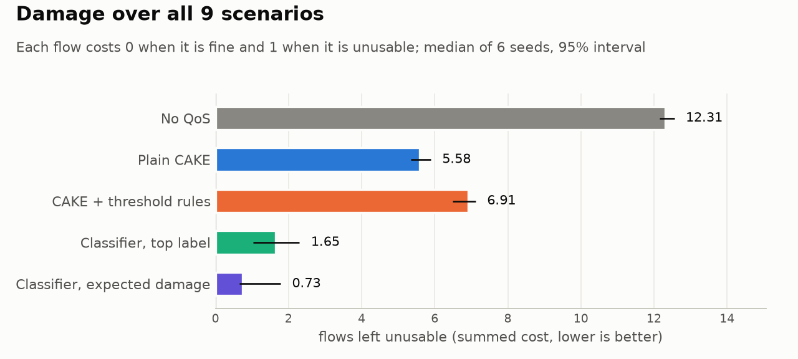
    <figcaption>Per seed, the nine scenarios' costs are added up; the bar is the median over ten seeds and the whisker its 95% bootstrap interval. The threshold rules do worse than plain CAKE: they push games and calls into Bulk.</figcaption>
  </figure>
  <figure>
    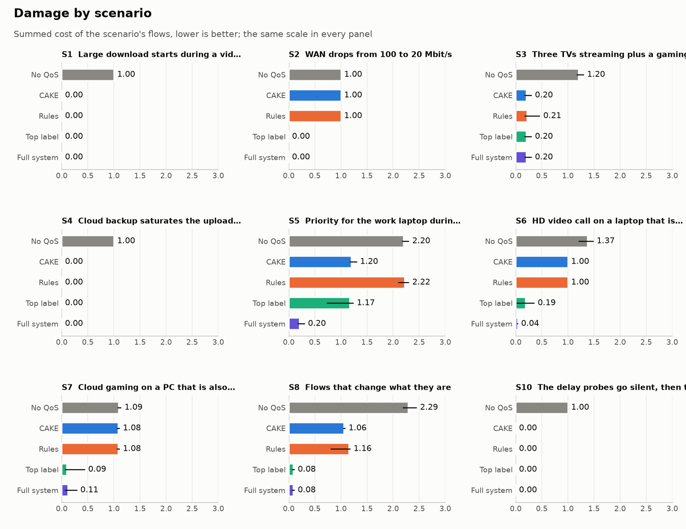
    <figcaption>Scenario by scenario. The full system wins S2, S5, S6, S7 and S8, and ties S1, S3, S4 and S10.</figcaption>
  </figure>
</section>

<section class="wide">
  <div class="table-wrap">
    <table>
      <thead><tr><th>Scenario</th><th>What happens</th><th class="n">No QoS</th><th class="n">CAKE</th><th class="n">Rules</th><th class="n">Top label</th><th class="n ours">Full system</th><th>vs CAKE</th></tr></thead>
      <tbody>
        <tr><td class="tag">S1</td><td>Large download starts during a video call</td><td class="n">1.00</td><td class="n">0.00</td><td class="n">0.00</td><td class="n">0.00</td><td class="n ours">0.00</td><td class="tie">tie</td></tr>
        <tr><td class="tag">S2</td><td>Line drops from 100 to 20 Mbit/s mid-call</td><td class="n">1.00</td><td class="n">1.00</td><td class="n">1.00</td><td class="n">0.00</td><td class="n ours">0.00</td><td class="win">better</td></tr>
        <tr><td class="tag">S3</td><td>Three TVs streaming and a game console</td><td class="n">1.20</td><td class="n">0.20</td><td class="n">0.21</td><td class="n">0.20</td><td class="n ours">0.20</td><td class="tie">tie</td></tr>
        <tr><td class="tag">S4</td><td>Cloud backup fills the upload during a game</td><td class="n">1.00</td><td class="n">0.00</td><td class="n">0.00</td><td class="n">0.00</td><td class="n ours">0.00</td><td class="tie">tie</td></tr>
        <tr><td class="tag">S5</td><td>Work call on a laptop that is backing up, busy evening, priority lease</td><td class="n">2.20</td><td class="n">1.20</td><td class="n">2.22</td><td class="n">0.22</td><td class="n ours">0.22</td><td class="win">better</td></tr>
        <tr><td class="tag">S6</td><td>HD video call on a laptop that is also sharing files</td><td class="n">1.37</td><td class="n">1.00</td><td class="n">1.00</td><td class="n">0.00</td><td class="n ours">0.00</td><td class="win">better</td></tr>
        <tr><td class="tag">S7</td><td>Cloud game on a PC that is also fetching a game update</td><td class="n">1.09</td><td class="n">1.08</td><td class="n">1.08</td><td class="n">0.09</td><td class="n ours">0.11</td><td class="win">better</td></tr>
        <tr><td class="tag">S8</td><td>Camera off and on, lobby to match, download paused</td><td class="n">2.29</td><td class="n">1.06</td><td class="n">1.16</td><td class="n">0.08</td><td class="n ours">0.08</td><td class="win">better</td></tr>
        <tr><td class="tag">S10</td><td>Probe targets go silent, then the controller is killed</td><td class="n">1.00</td><td class="n">0.00</td><td class="n">0.00</td><td class="n">0.00</td><td class="n ours">0.00</td><td class="tie">tie</td></tr>
        </tbody>
    </table>
  </div>
  <p class="meta">Summed cost per scenario, median of ten seeds. "Better" means the 95% interval of the seed-by-seed difference lies wholly below zero and outside the noise band.</p>
  <p><strong>Noise between identical runs.</strong> Ninety A/A runs (plain CAKE, the same seed twice) gave exactly the same summed cost in eight of the nine scenarios. Only S8 varies, by up to 0.14 (its call is sometimes partly hurt), so in S8 a difference smaller than that counts as a tie. Every win above is far outside it.</p>
</section>

<section class="wide">
  <h2>What a person on the call would have seen</h2>
  <figure>
    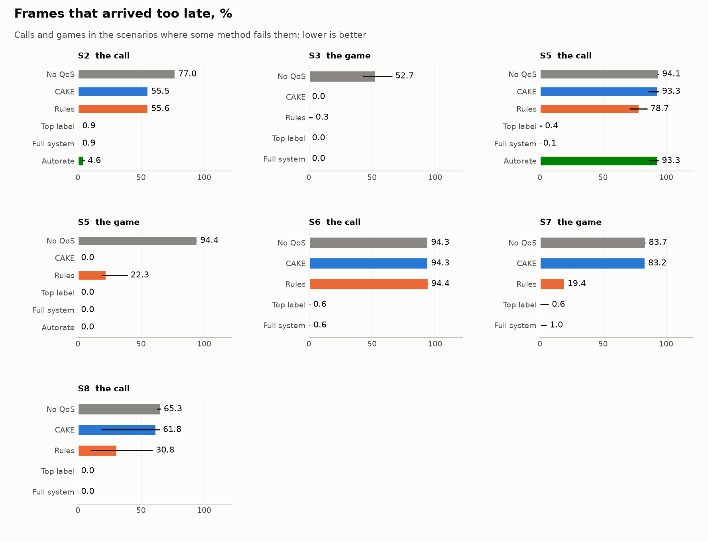
    <figcaption>Share of frames that arrived after their deadline (100 ms for calls, 50 ms for games). Above about 5% a call visibly stutters; above 20% it is unusable.</figcaption>
  </figure>
  <div class="pair">
    <figure>
      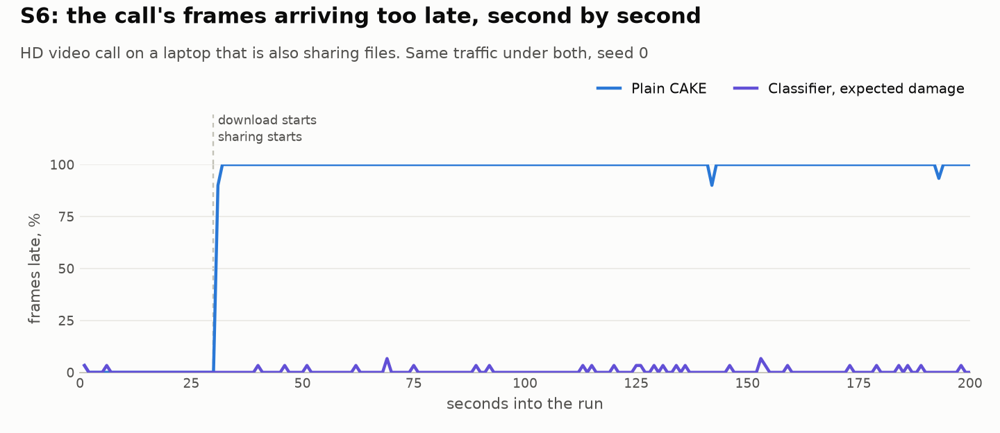
      <figcaption>S6, one run. When the file-sharing client starts, plain CAKE gives the call one share among eleven and almost every frame is late from then on. The full system had put the call in Video at 0.0 s.</figcaption>
    </figure>
    <figure>
      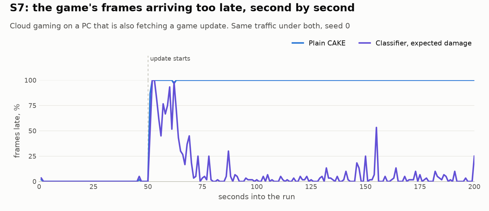
      <figcaption>S7, one run. The game update starts eight connections on the same PC. The full system shows one short spike while the capacity estimator reacts to the burst, then nothing.</figcaption>
    </figure>
    <figure>
      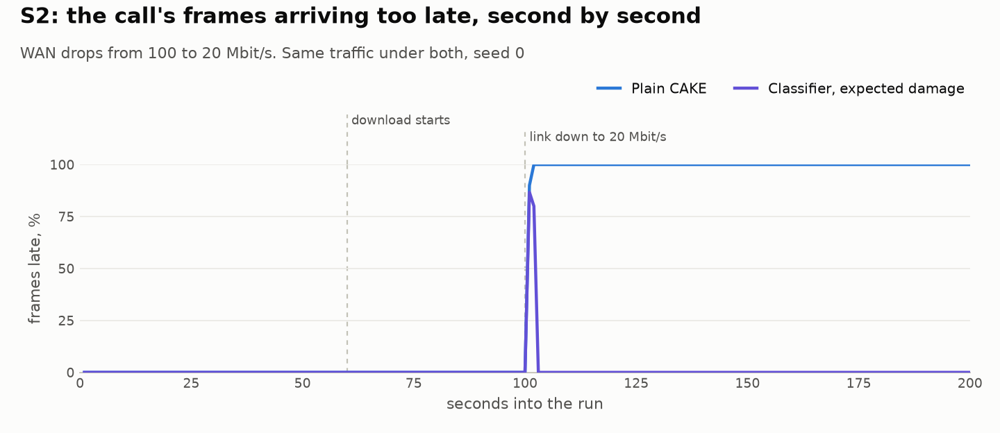
      <figcaption>S2, one run. The line falls to a fifth of its speed. A fixed shaper is now above the line and the modem's buffer fills; the capacity estimator detects the drop in about 350 ms and moves CAKE under the new rate.</figcaption>
    </figure>
    <figure>
      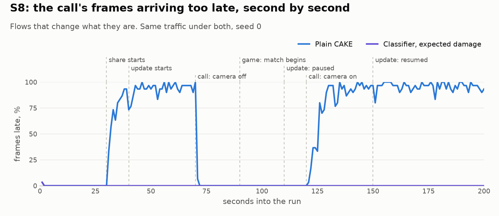
      <figcaption>S8, one run. Plain CAKE's call suffers whenever bulk traffic shares its laptop; under the full system it stays clean through every change.</figcaption>
    </figure>
  </div>
</section>

<section class="wide">
  <h2>Against each rival, seed by seed</h2>
  <figure>
    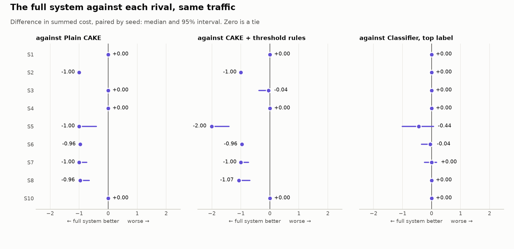
    <figcaption>Left of zero the full system is better. Against plain CAKE and the rules it is better or tied in every scenario. Against cake-autorate (S2 and S5 only) it is better in every run. Against the simpler top-label rule it ties every scenario.</figcaption>
  </figure>
  <p><strong>The classifier is the hero; expected damage is not shown to matter live.</strong> In the frozen system top label and expected damage tie on every scenario (0.70 against 0.69 unusable flows), because the fixes made for the freeze helped both. To test the decision rule directly, the classifier was weakened on purpose. Offline, expected damage stayed ahead at every noise level. Live (three seeds per cell) it did not: at moderate noise it left the S6 call worse (54% late frames against 10%). We therefore do not claim a live benefit for expected damage; it is the frame for the safety guards, and the recognising does the work.</p>
  <figure>
    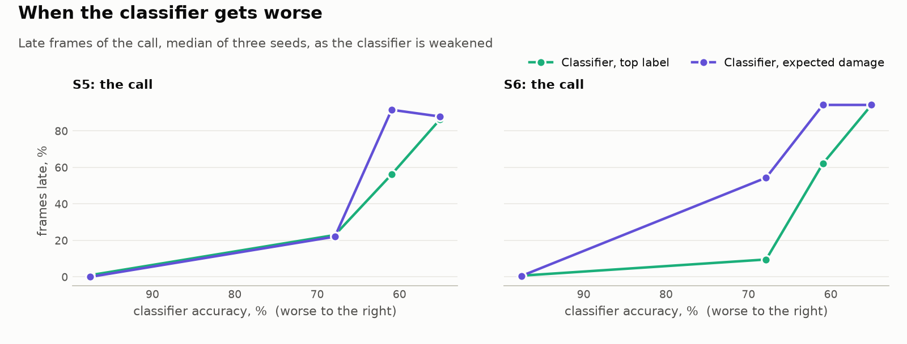
    <figcaption>The weakened-classifier test: every input multiplied by exp(N(0, σ)). Offline damage on the left, live late frames on the right.</figcaption>
  </figure>
</section>

<section>
  <p class="eyebrow">Tests the system was not tuned on</p>
  <h2>Fresh seeds, a new home, a standard tool and real calls</h2>
  <p>Before the freeze, scenarios exposed problems that were fixed, so the system was partly tuned on its own tests. Everything below was run once, after the freeze, and is reported whatever it showed.</p>
  <ul class="plain">
    <li><strong>Fresh seeds 10 to 14.</strong> Better than plain CAKE in 21 paired runs, tied in 29, worse in none; never worse than the rules. S6 94% → 1.0%, S2 56% → 0.9%, S5 78% → 0.0%, S7 83% → 0.4% late frames. Unusable flows over ten scenarios: CAKE 4.99, rules 7.86, AQoSE 0.99. Five seeds are too few for any single comparison to reach significance (Wilcoxon's smallest p is 0.0625); the direction agrees everywhere.</li>
    <li><strong>S11, a family evening on a 50/10 line</strong>, written before the freeze and never run during development. Plain CAKE already protects everything (0.7% late frames) and AQoSE ties it (0.0%); the threshold rules ruin the call (69%). It shows AQoSE stays safe on a home it was not tuned for; it is not a new win.</li>
    <li><strong>cake-autorate</strong> (v3.2.2, unmodified). On S2 it cuts late frames from 56% to 4.6%; AQoSE reaches 0.9%, with p95 latency 19.5 ms against 95.9. On S5 it does nothing (93%): no rate setting fixes a call sharing its laptop with a backup.</li>
    <li><strong>Real WhatsApp video calls, replayed</strong> packet for packet on a laptop sharing files (50/4 line). S12, a call the frozen model never trained on: plain CAKE 57%, rules 43%, AQoSE 2.4% late frames. S13, a larger call that is in the training data: 79%, 97%, 14%. The model labelled both calls "video call" within 0.13 s in all 20 runs and kept them in Video. S13's remaining late frames are on the 4 Mbit/s upload, where the call's real keyframe bursts exceed the half of the link CAKE's Video tin may use at priority. With the model from before the freeze, which never saw WhatsApp, the calls were labelled "voice call" and still protected (6.6% and 31%), but the reclassifier moved them between Voice and Video several times.</li>
    <li><strong>IPv6 end to end</strong> (S14: S6 with every connection over IPv6, three seeds). Late frames 94.3% → 0.3%, p95 latency 1,788 → 19 ms; the call was recognised as a video call at 0.01 s.</li>
    <li><strong>No starvation, fairness kept.</strong> Bulk transfers keep a median 98% of their plain-CAKE throughput (75–104% by scenario; the ones that give way share a device with a call) and never starve more than under plain CAKE. Jain's index between devices is unchanged within ±0.01. After the line drops (S2), the estimator is under the new rate within 2 s with 6% steady-state error; cake-autorate 3 s and 20%.</li>
    <li><strong>One failure.</strong> In one fresh seed of S7 the generator drew a 24.9 Mbit/s cloud game. AQoSE put it in Voice, but CAKE gives Voice priority only up to a quarter of the rate (23.75 Mbit/s), so the game lost priority and 72% of its frames were late, no better than CAKE. High-bitrate interactive flows should go to Video; that is a change for the next version.</li>
  </ul>
</section>

<section>
  <p class="eyebrow">Where it does not help</p>
  <h2>Four ties, and why they are expected</h2>
  <p>In S1, S3, S4 and S10 every interactive flow is alone on its device. CAKE's fairness between devices already protects it, so no tin assignment can improve on plain CAKE, and none of the methods does. The damage measurements predicted this before the scenarios ran: alone on its device, a call or a game is unharmed in any tin except Bulk.</p>
  <p>The claim this project can defend is therefore narrower than "beats CAKE everywhere", and sharper: <strong>the classifier beats plain CAKE when an interactive flow shares its device with bulk traffic, and the capacity estimator beats it when the line's speed changes. Elsewhere it ties CAKE, and it never does worse than the threshold rules.</strong></p>
</section>

<section>
  <p class="eyebrow">Before any live traffic</p>
  <h2>The classifier on recorded flows</h2>
  <figure>
    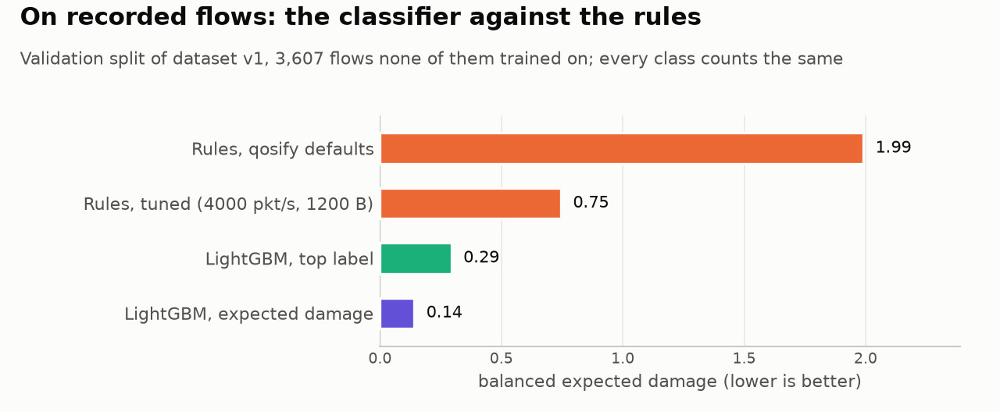
    <figcaption>Go/no-go check on 3,607 recorded flows from 370 sessions that no model trained on: public datasets (ISCX, Purdue video calls on current Zoom, Meet, Teams and Webex, UNSW cloud gaming, Labayen) and our own JioGamesCloud captures. Every class counts the same. qosify's defaults sent 89% of cloud-gaming flows to Bulk; the model sent none.</figcaption>
  </figure>
  <div class="table-wrap">
    <table>
      <thead><tr><th></th><th class="n">Rules, qosify defaults</th><th class="n">Rules, tuned</th><th class="n ours">LightGBM</th><th class="n">Flows</th></tr></thead>
      <tbody>
        <tr><td>Accuracy</td><td class="n">0.46</td><td class="n">0.42</td><td class="n ours">0.94</td><td class="n">3,607</td></tr>
        <tr><td>Macro-F1</td><td class="n">0.11</td><td class="n">0.10</td><td class="n ours">0.74</td><td class="n"></td></tr>
        <tr><td>Calibration error</td><td class="n">–</td><td class="n">–</td><td class="n ours">0.05</td><td class="n"></td></tr>
        <tr><td>Recall, voice call</td><td class="n">0.00</td><td class="n">0.00</td><td class="n ours">0.74</td><td class="n">19</td></tr>
        <tr><td>Recall, game and cloud game</td><td class="n">0.03</td><td class="n">0.69</td><td class="n ours">0.95</td><td class="n">111</td></tr>
        <tr><td>Recall, video call</td><td class="n">0.00</td><td class="n">0.00</td><td class="n ours">1.00</td><td class="n">443</td></tr>
        <tr><td>Recall, streaming</td><td class="n">0.00</td><td class="n">0.00</td><td class="n ours">0.91</td><td class="n">23</td></tr>
        <tr><td>Recall, web and other</td><td class="n">0.58</td><td class="n">0.50</td><td class="n ours">0.95</td><td class="n">2,843</td></tr>
        <tr><td>Recall, download</td><td class="n">0.00</td><td class="n">0.00</td><td class="n ours">0.77</td><td class="n">67</td></tr>
        <tr><td>Recall, background transfer</td><td class="n">0.14</td><td class="n">0.00</td><td class="n ours">0.78</td><td class="n">101</td></tr>
      </tbody>
    </table>
  </div>
  <p class="meta">The rules' recall is measured against the class whose tin they choose; they have three outputs, not seven, which is why their macro-F1 is so low. Their damage is the fairer comparison. This table is the v1 model on validation.</p>
  <p><strong>The sealed test set, opened once (Oct 16).</strong> 1,213 flows from 183 sessions no model or rule was tuned on, scored with the frozen model (v2): accuracy 0.969, macro-F1 0.73, balanced expected damage 0.27 against 0.64 for the tuned rules and 1.62 for qosify's defaults. None of the 221 video-call flows or 47 cloud-gaming flows went to Bulk; qosify's defaults sent 14% and 78%. Small classes are thin: 6 voice-call, 8 streaming and 4 large-download flows.</p>
  <h3>Random forest or gradient-boosted trees</h3>
  <p>Two models were trained on the same training split, calibrated on the same calibration split and judged on the same 3,607 validation flows: a random forest (scikit-learn) and gradient-boosted trees (LightGBM). Both are tree ensembles, because the input is 28 numbers per flow and the model has to answer on a router's CPU within a 50 ms deadline, with no GPU. The rule for choosing was fixed before training: the lower balanced expected damage on validation wins.</p>
  <div class="table-wrap">
    <table>
      <thead><tr><th></th><th class="n">Random forest</th><th class="n ours">LightGBM</th></tr></thead>
      <tbody>
        <tr><td>Settings</td><td class="n">300 trees, depth up to 24</td><td class="n ours">37 rounds × 7 classes = 259 trees, up to 127 leaves each</td></tr>
        <tr><td>How the settings were found</td><td class="n">fixed</td><td class="n ours">12 tried, best on validation</td></tr>
        <tr><td>Calibration (chosen by expected damage)</td><td class="n">isotonic</td><td class="n ours">sigmoid</td></tr>
        <tr><td>Balanced expected damage, expected-damage rule</td><td class="n">0.146</td><td class="n ours">0.141</td></tr>
        <tr><td>Balanced expected damage, top-label rule</td><td class="n">0.279</td><td class="n ours">0.294</td></tr>
        <tr><td>Accuracy</td><td class="n">0.942</td><td class="n ours">0.944</td></tr>
        <tr><td>Macro-F1</td><td class="n">0.719</td><td class="n ours">0.735</td></tr>
        <tr><td>Calibration error (lower is better)</td><td class="n">0.025</td><td class="n ours">0.052</td></tr>
        <tr><td>Time to classify one flow</td><td class="n">13.5 ms</td><td class="n ours">1.4 ms</td></tr>
        <tr><td>Model size</td><td class="n">11.7 MB</td><td class="n ours">1.5 MB</td></tr>
        <tr><td>Training time</td><td class="n">47 s</td><td class="n ours">117 s, search included</td></tr>
      </tbody>
    </table>
  </div>
  <p>On accuracy and damage the two are a tie: 0.005 apart, where the uncertainty on either is about ten times that. The random forest is better calibrated, and does slightly better under the top-label rule. LightGBM won the pre-set rule by a hair, and that hair is not why it is the right choice. It answers in a tenth of the time and is an eighth of the size, which leaves most of the 50 ms deadline free when many flows start at once, and fits on a router with little memory. Had the forest won by the same margin, the speed and size would still have argued for LightGBM.</p>
  <p class="meta">Within the training sources LightGBM fits closely: accuracy 0.991 on the training split against 0.944 on validation, macro-F1 0.93 against 0.74. Its settings were chosen on validation, so validation is somewhat optimistic; the sealed test set is the honest check.</p>
  <h3>Leave one source out</h3>
  <p>Trained without one data source and tested on that source alone, the model does much worse on it. This is the largest risk on the machine-learning side: within a source the model is excellent, across sources it is not yet.</p>
  <div class="table-wrap">
    <table>
      <thead><tr><th>Left out</th><th>Class tested</th><th class="n">Flows</th><th class="n">Damage, source left out</th></tr></thead>
      <tbody>
        <tr><td>Purdue 2026 (Zoom, Meet, Teams, Webex)</td><td>video call</td><td class="n">437</td><td class="n">1.63</td></tr>
        <tr><td>UNSW 2025 cloud gaming</td><td>game and cloud game</td><td class="n">97</td><td class="n">2.13</td></tr>
        <tr><td>ISCX VPN-nonVPN 2016</td><td>download</td><td class="n">23</td><td class="n">2.23</td></tr>
        <tr><td>ISCX VPN-nonVPN 2016</td><td>web and other</td><td class="n">229</td><td class="n">0.92</td></tr>
        <tr><td>Own captures, JioGamesCloud</td><td>game and cloud game</td><td class="n">3</td><td class="n">0.80</td></tr>
        <tr><td>Labayen 2020</td><td>streaming</td><td class="n">13</td><td class="n">0.48</td></tr>
        <tr><td>ISCX Tor/non-Tor 2016</td><td>web and other</td><td class="n">1,591</td><td class="n">0.00</td></tr>
      </tbody>
    </table>
  </div>
  <p class="meta">With every source in training, the same classes score 0.00 to 0.03. The testbed source cannot be left out: some classes would have no training data at all.</p>
  <h3>Where traffic it has never seen ends up</h3>
  <p>A wrong label is not the same as a wrong tin. Calling a video call a voice call is harmless, since both are protected. The mistakes that hurt are a call or a game put in Bulk, or left in Best Effort beside bulk traffic on the same device. So the question for unseen traffic is where it is placed.</p>
  <div class="table-wrap">
    <table>
      <thead><tr><th>Unseen traffic</th><th class="n">Labelled right</th><th class="n">Voice or Video</th><th class="n">Best Effort</th><th class="n">Bulk</th></tr></thead>
      <tbody>
        <tr><td>Six WhatsApp calls, 3 voice and 3 video, recorded Oct 14 on a home line</td><td class="n">50%</td><td class="n ours">100%</td><td class="n">0%</td><td class="n">0%</td></tr>
        <tr><td>Zoom, Meet, Teams, Webex calls, model trained without them</td><td class="n">0%</td><td class="n ours">75%</td><td class="n">9%</td><td class="n loss">16%</td></tr>
        <tr><td>Cloud gaming on four platforms, model trained without it</td><td class="n">16%</td><td class="n ours">18%</td><td class="n">81%</td><td class="n">2%</td></tr>
      </tbody>
    </table>
  </div>
  <p>Share of each flow's records, by where the full system's decision rule placed them. The WhatsApp video calls were labelled "voice call" on every record and still went to Voice or Video every time. Unseen cloud gaming mostly fell back to Best Effort, which is where plain CAKE would have left it. The weakness is the 16% of unseen video-call records sent to Bulk: there the model was confidently wrong, above the 80% bar for demotion, so the bar did not catch it. Demotion to Bulk therefore needed evidence besides the model's confidence. <strong>Fixed in the frozen system:</strong> no demotion on a flow's first eight packets alone, and none for UDP, where calls and games live. On the same held-out sources, Bulk placements fell to 0% for unseen video calls, cloud games and downloads (from 16%, 2% and 10%). The cost: peer-to-peer over UDP stays in Best Effort, and offline balanced damage rises from 0.141 to 0.242, still a third of the tuned rules' 0.745.</p>
  <p><strong>Retrained with real calls.</strong> Dataset v2 adds the six WhatsApp calls. The retrained model (lgbm-v2-b3f691d8, temperature calibration) scores accuracy 0.972 and macro-F1 0.80 on 43,221 held-out records, and is the one in the final runs. It also runs without Python now: the trees and the decision rule were ported to Go, give the same answers as Python (probabilities within 4×10⁻¹⁶ on 2,000 records, the same tin on every one) and take about 6 µs per flow.</p>
  <figure>
    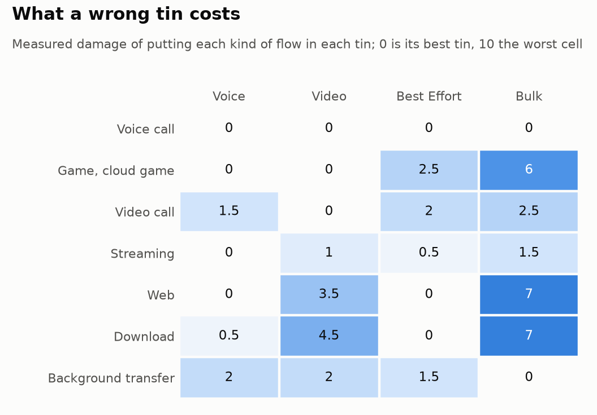
    <figcaption>The measured damage table the decision engine reads. A game in Bulk costs 6; a download in Video costs 4.5 because it hurts the calls beside it; a background transfer belongs in Bulk because anywhere else it takes upload a call needs.</figcaption>
  </figure>
  <p><strong>How much the decisions hang on these numbers.</strong> The table has two seeds per cell and is rounded to half a point. Scaling every cell by a random 0.75 to 1.25 changes the tin of at most 2.1% of validation flows, and the expected damage barely moves (0.141 to at worst 0.146). Scaling leaves the many zero cells at zero, though, and those are where the table is weakest. Moving every cell by up to a whole point either way changes the tin of 14% of flows at the median and 39% at worst, and the damage rises to as much as 0.36: still half the tuned rules' 0.75, but the zeros matter. More seeds per cell would narrow this.</p>
</section>

<section>
  <p class="eyebrow">What we learned</p>
  <h2>Most improvements came from scenarios exposing a wrong assumption</h2>
  <div class="findings">
    <div class="finding"><h3>A tin only matters when the flow has company on its device</h3><p>The first damage measurements had every flow alone on its device, and every tin looked almost the same. A cloud game on a PC fetching an update got 0.6 of its 16.7 Mbit/s in Best Effort and all of it in Video. That reshaped the scenarios and the claim.</p></div>
    <div class="finding"><h3>The damage table is a model of what matters, and it was wrong three times</h3><p>Each gap was found by a scenario: no reward for demoting a backup beside a call; a call apparently better off in Bulk because ruining it freed room for another call; Voice rated harmless for everything because each flow was measured there alone. The last one made the full system lose S7 in the first smoke run (51% late frames) until Voice was limited to flows the model is over 50% sure are calls or games. After that fix, in the smoke run, the full system matched or beat every rival on every scenario.</p></div>
    <div class="finding"><h3>Round-trip probes cannot tell which way the queue is</h3><p>The one run where the full system lost to plain CAKE (S5, seed 0) had three streams queueing on the way down while the estimator also cut the upload, eleven times, to 2.2 Mbit/s on a 5 Mbit/s line, and the call no longer fitted. The fix cuts the download first, since its queue can be measured, and the upload only if the delay outlasts that by two seconds. It is in the frozen system, and S5 is part of the final rerun.</p></div>
    <div class="finding"><h3>With nothing to go on, do nothing</h3><p>The first design sent the shaper to a low fixed rate when the probe targets stopped answering. In S10 the link was fine and only the targets were gone, and the fallback broke a call. The estimator now holds its rate while deaf, and S10 costs nothing.</p></div>
    <div class="finding"><h3>Simulations shared their author's blind spots</h3><p>The capacity estimator passed every test against a simulated link and failed four times on the real one: slow answers counted as lost, a rate parked just above the link, a cut sized by a quiet second before a burst, unreachable targets read as delay. All four are now regression tests.</p></div>
  </div>
</section>

<section>
  <p class="eyebrow">Limits</p>
  <h2>What these numbers do not show</h2>
  <ul class="plain">
    <li><strong>Generated calls and games do not adapt their bitrate.</strong> Short of bandwidth, a real app lowers its quality; ours lose packets. "Plain CAKE breaks the call" is true, but how badly is the generator's.</li>
    <li><strong>The model has partly learned the lab.</strong> On a data source it never saw, its labels are often wrong. The frozen system's guard keeps such traffic out of Bulk, but a wrong label can still leave a call in Best Effort beside bulk traffic. More sources per class is the real remedy; six WhatsApp calls are a start.</li>
    <li><strong>Self-graded metric.</strong> The cost scale is the one the damage table, and so the decision engine, is built from. The raw measurements table is the evidence; the cost is a summary of it.</li>
    <li><strong>Tuned partly on its own test.</strong> The ten main seeds include the ones the fixes were found on. The fresh seeds, S11 and the real calls are the answer, and they are few.</li>
    <li><strong>Voice tin share.</strong> A cloud game above a quarter of the line loses priority in Voice (one fresh seed of S7).</li>
    <li><strong>Not yet measured:</strong> a flood of short flows (S9); fairness between devices; IPv6 traffic end to end (the marking is tested on IPv6, the scenarios run on IPv4); traffic inside a VPN.</li>
    <li><strong>One machine, one testbed.</strong> Rates from 25 to 100 Mbit/s on emulated links. Gigabit rates and real home hardware are untested.</li>
    <li><strong>Thresholds are judgements.</strong> What counts as an unusable call or a slowed download is written in a scoring file; the raw measurements are kept so other judgements can be applied without new runs.</li>
    <li><strong>The reclassifier is not yet stressed.</strong> In S8 the right tin never changes; the reclassifier mostly corrects first labels. A scenario where the right tin changes is still to be written.</li>
    <li><strong>Real calls switch relays.</strong> A WhatsApp video call we captured moved to another relay 12 s after starting, which a live router sees as a new flow whose first packets are probes.</li>
  </ul>
</section>

<section>
  <p class="eyebrow">Next</p>
  <h2>What comes next</h2>
  <ol class="steps">
    <li>Run on a real OpenWrt router; measure CPU and latency there.</li>
    <li>Send high-bitrate interactive flows to Video rather than Voice.</li>
    <li>More data sources per class, especially voice calls and streaming; recheck leave-one-source-out.</li>
    <li>A call generator driven by a real congestion controller, so "CAKE breaks the call" becomes the bitrate a real call would fall to.</li>
    <li>Calm the reclassifier for flows the model is unsure about.</li>
  </ol>
</section>

<section>
  <p class="eyebrow">Reproduce</p>
  <h2>Every number on this page from one repository</h2>
  <pre class="cmd">make check                         # 200+ unit tests, Go and Python
make testbed-check                 # 16 tests against the real testbed
PYTHONPATH=ml .venv/bin/python -m aqos_ml.run matrix configs/matrix-core.yaml --results results-core
scripts/final-runs.sh               # every run after the freeze, reports and charts
scripts/realcall-runs.sh MAIN WORKTREE   # the replayed real calls
PYTHONPATH=ml .venv/bin/python -m aqos_ml.charts --results results-core --out reports/charts</pre>
  <p class="meta">Rootless: no sudo needed for any experiment. Frozen system: git commit 4988d91, model lgbm-v2-b3f691d8, dataset v2 (sha256 b3f691d89f00). The offline tables marked v1 use lgbm-v1-fe91bbad. Measured damage table with two seeds per cell.</p>
</section>

</main>
